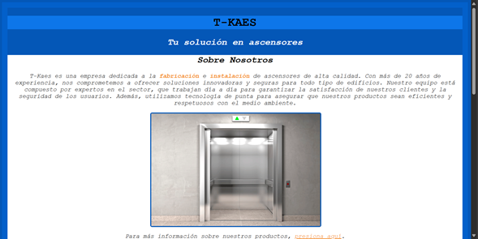
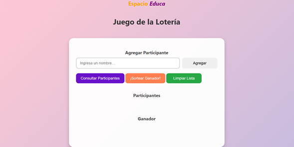
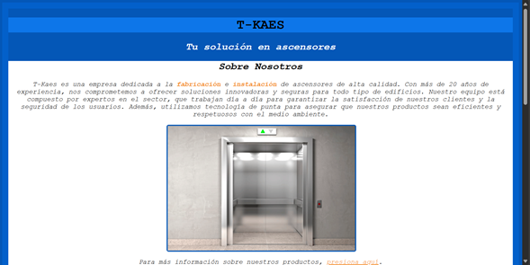
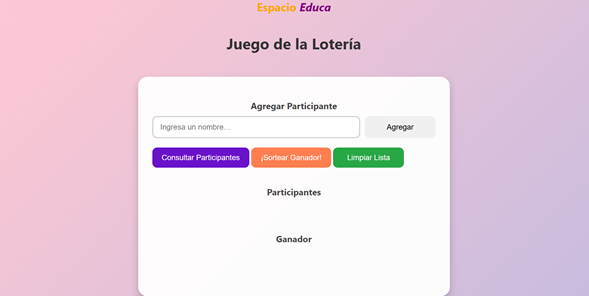

Sobre Mí
Soy María De Los Ángeles Pérez, perteneciente al curso nivel básico de Espacio Educa de la corte 2024-2025, y también Técnico Medio en la Especialidad Industriales Mención Informática. Poseo conocimientos básicos de desarrollador web, lenguajes de programación, base de datos, entre otros. Me interesa el área de la tecnología, programación y emprendimiento.
Pero también tengo intereses en el área de la psicología. Me caracterizo por ser una persona responsable, organizada y eficiente, pero además, me gusta ser independiente y poder ayudar a los demás.
Me gusta leer y cocinar, compartir con mis seres queridos y disfrutar de la naturaleza.
Dispongo de muchas habilidades y características que las he desarrollado durante varios proyectos, cursos, vivencias y experiencias que he realizado.
Mis Habilidades
Habilidades Técnicas
- Lenguaje de programación HTML
- Lenguaje de programación CSS
- Lenguaje de programación JavaScript
- Paquete Office
- Desarrollo de proyectos
- Marketing y Publicidad
- Finanzas y Emprendimiento
Habilidades Blandas
- Trabajo en equipo y colaboración
- Resolución de problemas
- Adaptabilidad y flexibilidad
- Comunicación efectiva
- Pensamiento crítico
- Creatividad e innovación
- Organización
Mis Proyectos
Landing Page
RoseLab.
Galería interactiva
Películas de Disney
Artículo con CSS
SENSORY SOOTHE
BoxModel y Divs
Scratch
Galería Multimedia
 



Explora mi galería multimedia para ver algunos de mis trabajos y proyectos más destacados durante el curso.